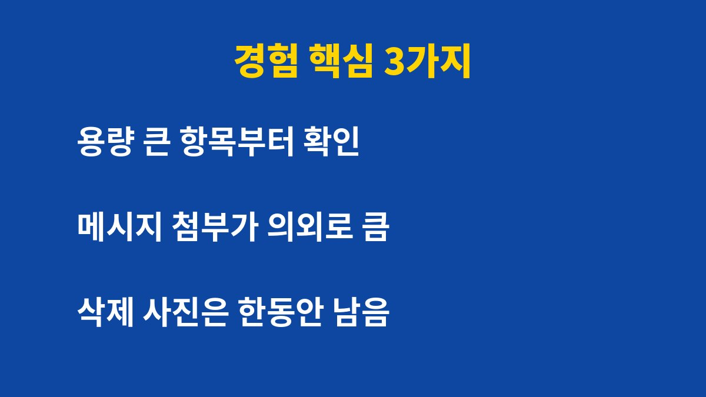
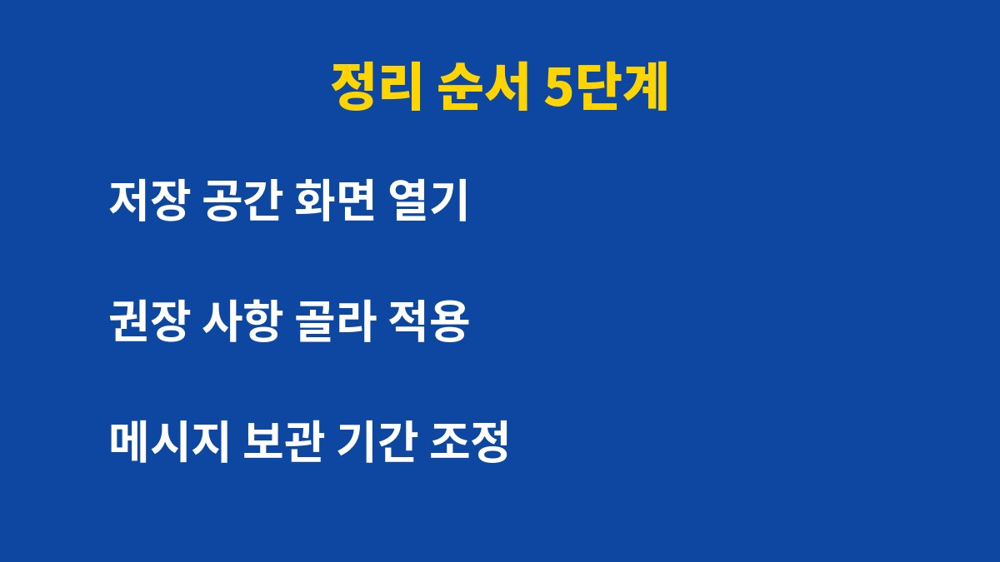

아이폰을 쓰다가 저장 공간이 거의 가득 찼다는 알림에 시달리는 사람이라면 아래 순서대로 확인하면 된다.
사진은 지우기 아깝고 앱은 다 필요해 보여서 알림만 넘기던 가장이나 1인 사업자에게 도움이 되도록 정리했다.
나는 상품 사진과 아이들 사진을 한 대의 폰에 함께 담아 쓴다.
그래서 주문을 확인하던 중에 저장 공간 부족 알림이 뜨면 흐름이 끊기고 마음도 급해진다.
이 글에서는 사진을 함부로 지우지 않고 여유 공간을 만든 순서를 그대로 적었다.
사진을 지우면 가장 빨리 해결될 것 같지만 추억과 상품 자료를 날릴 수 있어 망설이게 된다.
나도 처음에는 사진 앱을 열어 하나씩 훑다가 시간만 쓰고 포기했다.
알림은 계속 뜨는데 무엇이 용량을 차지하는지 모르니 답답함만 커졌다.
정리를 시작하기 전에 무엇이 공간을 차지하는지 눈으로 확인하는 일이 먼저다.
추측으로 지우면 정작 큰 덩어리는 그대로 남고 아끼던 자료만 사라질 수 있다.
나는 이 확인 한 번으로 정리 순서를 정할 수 있었고 불필요한 걱정도 줄었다.
화면에서 용량이 큰 순서대로 항목이 나열되기 때문에 어디부터 손댈지 바로 보인다.
상품 촬영본, 거래처와 주고받은 파일, 메신저 첨부가 모두 한 폰에 쌓여 있었다.
저장 공간 화면을 열어 보니 사진 못지않게 메시지 첨부 파일이 큰 비중을 차지했다.
사람마다 구성이 다르므로 이 화면은 각자 직접 열어 보아야 정확하다.

삭제한 사진은 곧바로 사라지지 않고 최근 삭제된 항목에 일정 기간 남는다.
그래서 분명히 지웠는데도 용량이 줄지 않는 경우가 생긴다.
이 사실을 모르고 같은 사진을 다시 지우려 했던 적이 있어서 따로 적어 둔다.
정말 비워야 하는 사진이라면 최근 삭제된 항목까지 확인해야 실제 여유 공간이 늘어난다.
먼저 사용하지 않는 앱 제거 기능을 켜 보았다.
이 기능은 앱 데이터는 남기고 앱 본체만 내려 주는 방식이라 부담이 적었다.
다음으로 메시지 보관 기간을 줄여서 오래된 대화의 사진과 영상이 쌓이는 속도를 낮췄다.
| 항목 | 설정 경로 | 내 판단 |
|---|---|---|
| 사용하지 않는 앱 제거 | 설정 > App Store | 부담 적어 먼저 시도 |
| 메시지 보관 기간 | 설정 > 메시지 | 첨부 많으면 효과 큼 |
| 사진 저장 공간 최적화 | 설정 > 사진 | iCloud 용량 확인 필수 |
iCloud 사진을 쓰고 있다면 기기에는 가벼운 버전만 두는 저장 공간 최적화 옵션이 있다.
원본은 iCloud에 남기 때문에 iCloud 용량이 충분한지 먼저 확인해야 한다.
이 방법은 월 요금제와 연결되므로 내 사용량에 맞는지 따져 보고 결정하는 것이 좋다.
아래 순서대로 하면 중요한 자료를 지우지 않고 여유 공간을 확인할 수 있다.

1. 설정 > 일반 > iPhone 저장 공간을 열어 용량이 큰 항목부터 확인한다.
2. 화면 위쪽에 나오는 권장 사항 중 내게 맞는 것만 골라 적용한다.
3. 설정 > 메시지 > 메시지 보관에서 보관 기간을 정한다.
4. 사진 앱의 최근 삭제된 항목에서 이미 지운 사진을 마저 정리한다.
5. 정리를 마친 뒤 저장 공간 화면을 다시 열어 줄어든 용량을 확인한다.
정리 도중 지우려는 항목이 무엇인지 확신이 서지 않으면 그 단계는 건너뛰는 것이 안전하다.
중요한 사진은 지우기 전에 백업 상태를 먼저 확인한다.
가족 사진처럼 다시 구할 수 없는 자료는 정리 대상에서 가장 마지막에 두었다.
저장 공간 알림은 한 번에 큰 정리를 하기보다 달마다 한 번 화면을 열어 보는 습관으로 줄일 수 있었다.
나는 월초에 주문 정산을 하면서 저장 공간 화면도 함께 열어 보기로 했다.
이 글의 방법이 같은 고민을 가진 분들에게 정리의 출발점이 되면 좋겠다.
※ 2026년 기준 개인 사용 경험과 공식 발표를 바탕으로 정리한 글이며, 기기·앱 버전에 따라 메뉴 이름이 다를 수 있다.